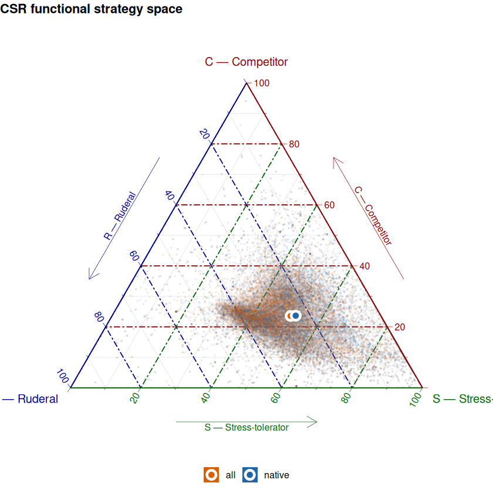

CSR global
CSR global#
.libPaths(c("/net/home/swolf/R/x86_64-pc-linux-gnu-library/4.4", .libPaths()))
library(data.table)
dtn = 10
setDTthreads(threads = dtn) #defines how many threads data.table is allowed to use
gbif_group <- fread("/net/scratch/swolf/GBIF/gbif_res3_try6_CS_wcvp_summary_stats_inkl_pca_mean_log10_notrim_misstree_group.csv")
head(gbif_group)
| h3_res3 | group | PC1 | PC2 | PC3 | PC4 | PC5 | count | count_sp | mean_perc_na | ⋯ | X.X237 | X.X614 | X.X351 | X.X6 | X.X95 | X.X138 | X.X1080 | X.X78 | X.X4 | X.X47 |
|---|---|---|---|---|---|---|---|---|---|---|---|---|---|---|---|---|---|---|---|---|
| <chr> | <chr> | <dbl> | <dbl> | <dbl> | <dbl> | <dbl> | <int> | <int> | <dbl> | ⋯ | <dbl> | <dbl> | <dbl> | <dbl> | <dbl> | <dbl> | <dbl> | <dbl> | <dbl> | <dbl> |
| 83001afffffffff | all | -10.334354 | 1.3228614 | -1.7255834 | 1.0414618 | 2.1589100 | 10 | 4 | 5.68 | ⋯ | -0.016 | 3.884 | -0.020 | -0.698 | 85.452 | 2.183 | 3.140 | -0.547 | 0.3330000 | 0.152 |
| 83001afffffffff | native | -10.334354 | 1.3228614 | -1.7255834 | 1.0414618 | 2.1589100 | 10 | 4 | 5.68 | ⋯ | -0.016 | 3.884 | -0.020 | -0.698 | 85.452 | 2.183 | 3.140 | -0.547 | 0.3330000 | 0.152 |
| 83001cfffffffff | all | -10.005360 | -0.2380058 | 0.2491376 | 2.9137390 | 0.9757523 | 1 | 1 | 16.22 | ⋯ | -0.119 | 3.810 | 0.001 | -0.744 | 92.099 | 2.545 | 3.121 | -0.563 | 0.3166111 | 0.175 |
| 83001cfffffffff | native | -9.988809 | -0.3014320 | 0.2822225 | 2.9136399 | 0.9666302 | 1 | 1 | 16.22 | ⋯ | -0.119 | 3.810 | 0.001 | -0.744 | 92.099 | 2.545 | 3.121 | -0.563 | 0.3291221 | 0.175 |
| 83001efffffffff | all | -10.690103 | -0.8713593 | -0.9452468 | -0.2685651 | 1.3119540 | 4 | 3 | 3.38 | ⋯ | 0.122 | 4.005 | 0.003 | -0.699 | 88.269 | 2.311 | 3.671 | -1.933 | 0.4090000 | 0.211 |
| 83001efffffffff | native | -10.690103 | -0.8713593 | -0.9452468 | -0.2685651 | 1.3119540 | 4 | 3 | 3.38 | ⋯ | 0.122 | 4.005 | 0.003 | -0.699 | 88.269 | 2.311 | 3.671 | -1.933 | 0.4090000 | 0.211 |
summary(gbif_group$X.X47)
Min. 1st Qu. Median Mean 3rd Qu. Max.
0.070 0.257 0.284 0.293 0.318 0.656
library(data.table)
# ── StrateFy (Pierce et al. 2017) ─────────────────────────────────────────────
stratefy <- function(LA, LDMC, SLA) {
# Units: LA mm², LDMC in %, SLA mm² mg⁻¹
la_t <- sqrt(LA / 894205) * 100
ldmc_t <- log((LDMC / 100) / (1 - LDMC / 100))
sla_t <- log(SLA)
c_raw <- -0.8678 + 1.6464 * la_t
s_raw <- 1.3369 + 0.000010019 * (1 - exp(-0.0000000000022303 * ldmc_t)) +
4.5835 * (1 - exp(-0.2328 * ldmc_t))
r_raw <- -57.5924 + 62.6802 * exp(-0.0288 * sla_t)
minC <- 0; maxC <- 57.3756711966087
minS <- -0.756451214853076; maxS <- 5.79158377609218
minR <- -11.3467682227961; maxR <- 1.10795515716546
c_raw <- pmin(pmax(c_raw, minC), maxC)
s_raw <- pmin(pmax(s_raw, minS), maxS)
r_raw <- pmin(pmax(r_raw, minR), maxR)
pC <- (c_raw - minC) / (maxC - minC) * 100
pS <- (s_raw - minS) / (maxS - minS) * 100
pR <- 100 - (r_raw - minR) / (maxR - minR) * 100 # SLA loads negatively
k <- 100 / (pC + pS + pR)
list(C = pC * k, S = pS * k, R = pR * k)
}
# ── Apply to your data ────────────────────────────────────────────────────────
LA_COLS <- c("X.X3114", "X.X3113", "X.X3112") # preferred order
# 1. Resolve LA first
gbif_group[, LA_resolved := fcoalesce(.SD), .SDcols = LA_COLS]
# 2. Check units before computing
summary(gbif_group[, .(LA_resolved, X.X47, X.X3117)])
# 3. Compute CSR (LDMC g/g → %)
gbif_group[, c("C", "S", "R") := stratefy(10^LA_resolved, X.X47 * 100, X.X3117)]
# 4. Summary
gbif_group[, .(C = mean(C, na.rm = TRUE),
S = mean(S, na.rm = TRUE),
R = mean(R, na.rm = TRUE)), by = group]
LA_resolved X.X47 X.X3117
Min. :0.626 Min. :0.070 Min. : 3.143
1st Qu.:2.597 1st Qu.:0.257 1st Qu.:14.114
Median :2.867 Median :0.284 Median :17.274
Mean :2.850 Mean :0.293 Mean :17.383
3rd Qu.:3.120 3rd Qu.:0.318 3rd Qu.:20.481
Max. :4.731 Max. :0.656 Max. :58.834
| group | C | S | R |
|---|---|---|---|
| <chr> | <dbl> | <dbl> | <dbl> |
| all | 23.57530 | 50.75085 | 25.67385 |
| native | 23.66794 | 52.14462 | 24.18744 |
head(gbif_group)
| h3_res3 | group | PC1 | PC2 | PC3 | PC4 | PC5 | count | count_sp | mean_perc_na | ⋯ | X.X95 | X.X138 | X.X1080 | X.X78 | X.X4 | X.X47 | LA_resolved | C | S | R |
|---|---|---|---|---|---|---|---|---|---|---|---|---|---|---|---|---|---|---|---|---|
| <chr> | <chr> | <dbl> | <dbl> | <dbl> | <dbl> | <dbl> | <int> | <int> | <dbl> | ⋯ | <dbl> | <dbl> | <dbl> | <dbl> | <dbl> | <dbl> | <dbl> | <dbl> | <dbl> | <dbl> |
| 83001afffffffff | all | -10.334354 | 1.3228614 | -1.7255834 | 1.0414618 | 2.1589100 | 10 | 4 | 5.68 | ⋯ | 85.452 | 2.183 | 3.140 | -0.547 | 0.3330000 | 0.152 | 1.449 | 0.9115658 | 0.00000 | 99.08843 |
| 83001afffffffff | native | -10.334354 | 1.3228614 | -1.7255834 | 1.0414618 | 2.1589100 | 10 | 4 | 5.68 | ⋯ | 85.452 | 2.183 | 3.140 | -0.547 | 0.3330000 | 0.152 | 1.449 | 0.9115658 | 0.00000 | 99.08843 |
| 83001cfffffffff | all | -10.005360 | -0.2380058 | 0.2491376 | 2.9137390 | 0.9757523 | 1 | 1 | 16.22 | ⋯ | 92.099 | 2.545 | 3.121 | -0.563 | 0.3166111 | 0.175 | 1.518 | 2.9437334 | 19.72053 | 77.33574 |
| 83001cfffffffff | native | -9.988809 | -0.3014320 | 0.2822225 | 2.9136399 | 0.9666302 | 1 | 1 | 16.22 | ⋯ | 92.099 | 2.545 | 3.121 | -0.563 | 0.3291221 | 0.175 | 1.518 | 2.9437334 | 19.72053 | 77.33574 |
| 83001efffffffff | all | -10.690103 | -0.8713593 | -0.9452468 | -0.2685651 | 1.3119540 | 4 | 3 | 3.38 | ⋯ | 88.269 | 2.311 | 3.671 | -1.933 | 0.4090000 | 0.211 | 1.391 | 0.0000000 | 47.80706 | 52.19294 |
| 83001efffffffff | native | -10.690103 | -0.8713593 | -0.9452468 | -0.2685651 | 1.3119540 | 4 | 3 | 3.38 | ⋯ | 88.269 | 2.311 | 3.671 | -1.933 | 0.4090000 | 0.211 | 1.391 | 0.0000000 | 47.80706 | 52.19294 |
# save the updated data.table to a new CSV file
fwrite(gbif_group, "/net/scratch/swolf/GBIF/gbif_res3_try6_CS_wcvp_summary_stats_inkl_pca_mean_log10_notrim_misstree_group_with_CSR.csv")
install.packages("ggtern") # if needed
library(ggtern)
library(ggplot2)
# Group means for the centroid markers
group_means <- gbif_group[!is.na(C),
.(C = mean(C), S = mean(S), R = mean(R)),
by = group]
# CVD-friendly two-colour pair
cols <- c(native = "#2166AC", all = "#D95F02")
# In ggtern: aes(x=) → left corner, aes(y=) → top, aes(z=) → right
# Mapping: R bottom-left, C top, S bottom-right (standard CSR layout)
ggtern(data = gbif_group[!is.na(C)],
mapping = aes(x = R, y = C, z = S, colour = group)) +
# Density contours per group (shows the bulk of the distribution)
stat_density_tern(
aes(fill = group, alpha = after_stat(level)),
geom = "polygon",
colour = NA,
bins = 7
) +
# Individual pixels (very transparent — gives a sense of spread)
geom_point(alpha = 0.1, size = 0.7, shape = 16) +
# Group centroids as bold filled circles
geom_point(data = group_means,
aes(x = R, y = C, z = S, fill = group),
shape = 21,
size = 3,
colour = "white",
stroke = 2) +
scale_colour_manual(values = cols, name = NULL) +
scale_fill_manual( values = cols, name = NULL) +
scale_alpha_continuous(range = c(0.05, 0.35), guide = "none") +
# Axis labels at the three corners
labs(title = "CSR functional strategy space",
x = "R — Ruderal",
y = "C — Competitor",
z = "S — Stress-tolerator") +
theme_rgbw() +
theme_showarrows() +
theme(
legend.position = "bottom",
legend.key = element_blank(),
plot.title = element_text(face = "bold", size = 13),
tern.axis.title.size = 0.9
)
ggsave("csr_triangle.pdf", width = 6, height = 6)
Installing package into ‘/net/home/swolf/R/x86_64-pc-linux-gnu-library/4.4’
(as ‘lib’ is unspecified)
Warning message in geom_point(data = group_means, aes(x = R, y = C, z = S, fill = group), :
“Ignoring unknown aesthetics: z”
Warning message in ggint$plot_theme(plot):
“The `tern.axis.title.size` theme element is not defined in the element
hierarchy.”
Warning message:
“Removed 640 rows containing non-finite outside the scale range
(`StatDensityTern()`).”
Warning message:
“stat_density_tern: You have not specified a below-detection-limit (bdl) value (Ref. 'bdl' and 'bdl.val' arguments in ?stat_density_tern). Presently you have 2x value/s below a detection limit of 0.001, which acounts for 0.022% of your data. Density values at fringes may appear abnormally high attributed to the mathematics of the ILR transformation.
You can either:
1. Ignore this warning,
2. Set the bdl value appropriately so that fringe values are omitted from the ILR calculation, or
3. Accept the high density values if they exist, and manually set the 'breaks' argument
so that the countours at lower densities are represented appropriately.”
Warning message:
“Removed 811 rows containing non-finite outside the scale range
(`StatDensityTern()`).”
Warning message:
“stat_density_tern: You have not specified a below-detection-limit (bdl) value (Ref. 'bdl' and 'bdl.val' arguments in ?stat_density_tern). Presently you have 6x value/s below a detection limit of 0.001, which acounts for 0.067% of your data. Density values at fringes may appear abnormally high attributed to the mathematics of the ILR transformation.
You can either:
1. Ignore this warning,
2. Set the bdl value appropriately so that fringe values are omitted from the ILR calculation, or
3. Accept the high density values if they exist, and manually set the 'breaks' argument
so that the countours at lower densities are represented appropriately.”
Warning message in ggint$plot_theme(plot):
“The `tern.axis.title.size` theme element is not defined in the element
hierarchy.”
Warning message in ggint$plot_theme(plot):
“The `tern.axis.title.size` theme element is not defined in the element
hierarchy.”
Warning message in ggint$plot_theme(plot):
“The `tern.axis.title.size` theme element is not defined in the element
hierarchy.”
Warning message:
“Removed 640 rows containing non-finite outside the scale range
(`StatDensityTern()`).”
Warning message:
“stat_density_tern: You have not specified a below-detection-limit (bdl) value (Ref. 'bdl' and 'bdl.val' arguments in ?stat_density_tern). Presently you have 2x value/s below a detection limit of 0.001, which acounts for 0.022% of your data. Density values at fringes may appear abnormally high attributed to the mathematics of the ILR transformation.
You can either:
1. Ignore this warning,
2. Set the bdl value appropriately so that fringe values are omitted from the ILR calculation, or
3. Accept the high density values if they exist, and manually set the 'breaks' argument
so that the countours at lower densities are represented appropriately.”
Warning message:
“Removed 811 rows containing non-finite outside the scale range
(`StatDensityTern()`).”
Warning message:
“stat_density_tern: You have not specified a below-detection-limit (bdl) value (Ref. 'bdl' and 'bdl.val' arguments in ?stat_density_tern). Presently you have 6x value/s below a detection limit of 0.001, which acounts for 0.067% of your data. Density values at fringes may appear abnormally high attributed to the mathematics of the ILR transformation.
You can either:
1. Ignore this warning,
2. Set the bdl value appropriately so that fringe values are omitted from the ILR calculation, or
3. Accept the high density values if they exist, and manually set the 'breaks' argument
so that the countours at lower densities are represented appropriately.”
Warning message in ggint$plot_theme(plot):
“The `tern.axis.title.size` theme element is not defined in the element
hierarchy.”
Warning message in ggint$plot_theme(plot):
“The `tern.axis.title.size` theme element is not defined in the element
hierarchy.”
Warning message in grid.Call.graphics(C_text, as.graphicsAnnot(x$label), x$x, x$y, :
“for 'C — Competitor' in 'mbcsToSbcs': - substituted for — (U+2014)”
Warning message in grid.Call.graphics(C_text, as.graphicsAnnot(x$label), x$x, x$y, :
“for 'R — Ruderal' in 'mbcsToSbcs': - substituted for — (U+2014)”
Warning message in grid.Call.graphics(C_text, as.graphicsAnnot(x$label), x$x, x$y, :
“for 'S — Stress-tolerator' in 'mbcsToSbcs': - substituted for — (U+2014)”
Warning message in grid.Call.graphics(C_text, as.graphicsAnnot(x$label), x$x, x$y, :
“for 'C — Competitor' in 'mbcsToSbcs': - substituted for — (U+2014)”
Warning message in grid.Call.graphics(C_text, as.graphicsAnnot(x$label), x$x, x$y, :
“for 'R — Ruderal' in 'mbcsToSbcs': - substituted for — (U+2014)”
Warning message in grid.Call.graphics(C_text, as.graphicsAnnot(x$label), x$x, x$y, :
“for 'S — Stress-tolerator' in 'mbcsToSbcs': - substituted for — (U+2014)”
